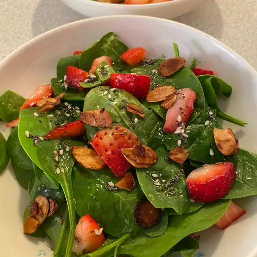

Spinach & Strawberry Salad

Description
My family loves this spinach strawberry salad all year-round, if we can find strawberries. Even the grandchildren love this salad. Quick and easy.
Ingredients
- 2 bunches spinach, rinsed and torn into bite-size pieces
- 4 cups sliced strawberries
- ½ cup vegetable oil
- ½ cup white sugar
- ¼ cup white wine vinegar
- 2 tablespoons sesame seeds
- 1 tablespoon poppy seeds
- ¼ teaspoon paprika
Steps
- Cut the strawberries in half
- Toss together spinach and strawberries in a large bowl.
- Whisk oil, sugar, vinegar, sesame seeds, poppy seeds, and paprika together in a medium bowl.
- Pour over the spinach and strawberries, and toss to coat.